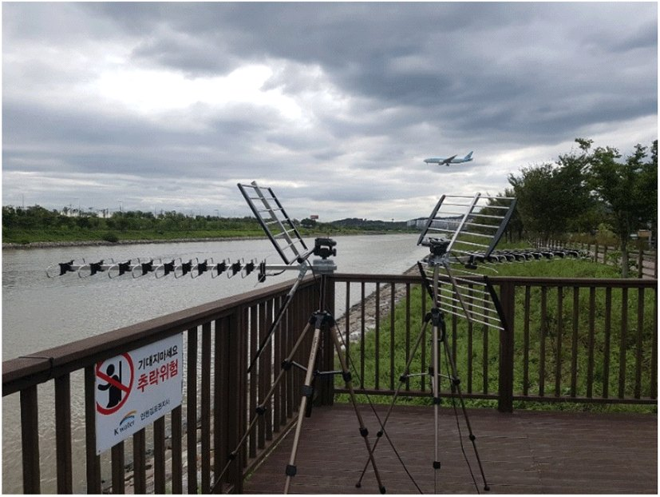

연구 과제 멀티스태틱 PCL 시스템 기술 분석 연구기간2019발주처·지원기관국가보안기술연구소(NSR)DTV 기반 수동형(PCL) 레이다 시스템 실험 — 천형일·이새미·이상민·문민정·이우경·이훈, 한국전자파학회논문지 32(3), 2021, 그림 7 (CC BY-NC 4.0)출처구 연구실 홈페이지 / 연구실-소개jkiees.org / archive/view_articlejkiees.org / archive/view_articlekci.go.kr / kciportal/ci/sereArticleSearch/ciSereArtiView.…ntis.go.kr / ThSearchProjectList.do ← 연구 과제 목록으로